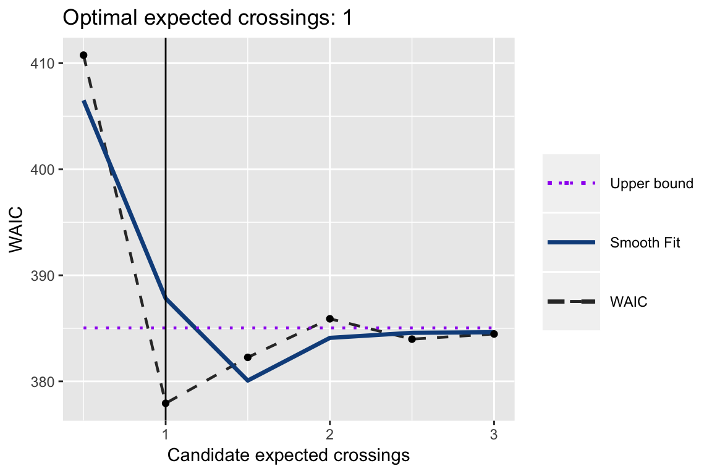
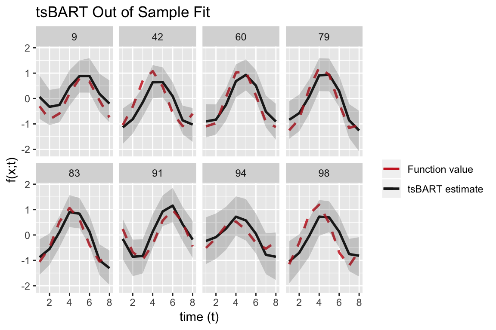

This vignette provides a walk-through of fitting the Targeted Smooth BART model to a simulated data set using the tsbart package.
We begin by loading a simulated data set, which we will use to illustrate how to use the Targeted Smooth BART method and the tsbart package.
Data contains four ‘x’ covariates; each pair is simulated from bivariate Gaussians with moderate correlation and unit variance. Each observation has one corresponding time point at which it is observed, randomly chosen from eight discrete time points.
Function values are calculated as \(f(x,t) = g(x_1,x_2) \cdot cos(t + 2 \pi h(x_3,x_4))\) where \(g(x_1,x_2)\) and \(h(x_3,x_4)\) represent sums of the covariate pairs.
In this configuration, \(g(x_1,x_2)\) controls amplitude, and \(h(x_3,x_3)\) controls phase shift.
The data set contains \(n=1000\) observations and \(T=8\) distinct time points. Variables included in the data set are
| Variable | Description |
|---|---|
| y | The observed value; functional response plus noise. |
| ti | The time associated with each observation. |
| fx | The true underlying function value, without noise. |
| eps | Standard normal noise. |
| \(x_1\), \(x_2\), \(x_3\), \(x_4\) | The four covariates; x1 and x2 are a correlated pair, as are x3 and x4. |
| id | Unique identifiers for each row. |
| train | Splits data into 70% (train), 30% (test). |
## y ti fx x1 x2 x3 x4
## 1 1.7824040 6 0.76553358 -1.10776147 -1.4300971 -2.5264193 -0.2615409
## 2 -0.1305318 3 -0.91196231 -0.82007937 -0.4301415 -1.2612625 -0.1500290
## 3 -2.6617458 8 -1.07411270 -0.08444446 -0.6749731 -0.4975946 -0.2275862
## 4 -0.2596328 6 -0.81073593 -1.13081866 -0.2856186 0.1469258 1.7693068
## 5 -1.0914732 3 -1.26686641 -0.46868413 1.0797134 -1.2567631 -1.5386179
## 6 0.9952693 1 -0.09395325 0.19053333 0.4109485 -0.9288042 -0.5324654
## id
## 1 1
## 2 2
## 3 3
## 4 4
## 5 5
## 6 6We begin by setting up our test and train data sets.
# Set up train and test data sets. train = sim %>% filter(train=='train') test = sim %>% filter(train=='test') # Set up covariates. xcols = which(substr(colnames(train),1,1)=="x") # Choose only cols x1, x2, x3, x4. xx = train[xcols]; x_pred = test[xcols] # Set up model matrices.
If we had factor covariates, we can use the utility function makeModelMatrix() to construct our model matrix. We do not need to do this; the tsbart() function does it automatically for us.
xx = makeModelMatrix(train[xcols])
x_pred = makeModelMatrix(test[xcols])We set hyperparameters as recommended in Chipman, George, and McCulloch (2010). We could only supply sigq and nu, leaving lambda and sighat as NULL; in this case, lambda and sighat are calibrated in the same way as shown here.
# Calibrate BART's error variance a la CGM 2010 (method 2) df = data.frame(xx, 't'=train$ti, 'y'=train$y) lmf = lm(y~.,df) sighat = sigma(lmf) # Hyperparameters nu = 3 sigq = .9 qchi = qchisq(1.0-sigq,nu) lambda = (sighat*sighat*qchi)/nu
We use WAIC to tune the expected number of crossings, which dictates the length-scale parameter for the Gaussian Process prior in Targeted Smooth BART. This approach consists of several steps (discussed in further detail in the paper). Note: this does not need to consist of a separate step, as the tsbart() function can perform tuning if indicated by the input ecross=“tune”. However, using the separate function provides a bit more flexibility, in that you can specify that the grid of candidate values, and provides a tuning plot and grid as part of the output.
Parameter setting consists of the following steps, all performed by the ecrossTune() function. 1. Set a grid of candidate expected crossing values.
2. Fit the Targeted Smooth BART model using each candidate value. 3. Fit a smooth function to the WAIC results across the grid of candidate values.
4. Calculate the residuals of the smooth function fit, and let \(sd = sd(residuals)\). 5. Select the optimal expected number of crossings value as the smallest where the corresponding WAIC is less than the minimum of the fitted curve plus sd.
# Evaluate optimal number of crossings. ecross_candidates = seq(.5,3,by=.5) ecrossTune = tuneEcross(ecross_candidates, y=train$y, tgt=train$ti, x=xx, nburn=100, nsim=100, ntree=200, lambda=lambda, sigq=sigq, sighat=sighat, nu=nu, base_tree=.95, power_tree=2, probit=FALSE, yobs=NULL) # Set expected number of crossings. exp_cross = ecrossTune[["ecross_opt"]] # Print plot. print(ecrossTune[["waic_plot"]])

We are now ready to fit the Targeted Smooth BART model. Had we not done the previous parameter tuning, we could tune here by setting ecross=“tune”.
fit = tsbart(y=train$y, tgt=train$ti, tpred=test$ti, x=xx, xpred=x_pred, nburn=250, nsim=500, ntree=200, lambda=lambda, sigq=.9, nu=3, ecross=exp_cross, base_tree=.95, power_tree=2, probit=F, yobs=NULL, verbose=F)
We select a few observations from the test data, which are observed at each time point, to construct a plot of the out-of-sample Targeted Smooth BART fits.
# Set up data frames for plotting out of sample curves over time. ggdf_pred = cbind.data.frame( 'id' = test$id, 't' = test$ti, 'y' = test$y, 'fx' = test$fx, 'pmean' = apply(fit[["mcmcdraws_oos"]], 2,function(x) mean(x)), 'lb' = apply(fit[["mcmcdraws_oos"]], 2,function(x) quantile(x,.025)), 'ub' = apply(fit[["mcmcdraws_oos"]], 2,function(x) quantile(x,.975)), x_pred ) # Select a few IDs to include. id_sel = c(9,42,60,79,83,91,94,98) # Plot out-of-sample fit for each curve over time, for combos of covariates x. ggplot(ggdf_pred %>% filter(id %in% id_sel)) + geom_line(aes(y = pmean, x = t, colour='pmean'), linetype=1, size=1, stat="identity") + geom_line(aes(y=fx, x=t, colour='fx'), linetype=2, size=1, stat="identity",alpha=.85) + geom_ribbon(aes(ymin=lb,ymax=ub, x=t),alpha=0.2) + facet_wrap(~id,ncol=4) + scale_colour_manual(values=c("firebrick3","grey10"), labels=c('Function value','tsBART estimate'), name='') + scale_fill_manual(values="grey80", guide=FALSE) + labs(x='time (t)', y='f(x;t)', title = 'tsBART Out of Sample Fit')
